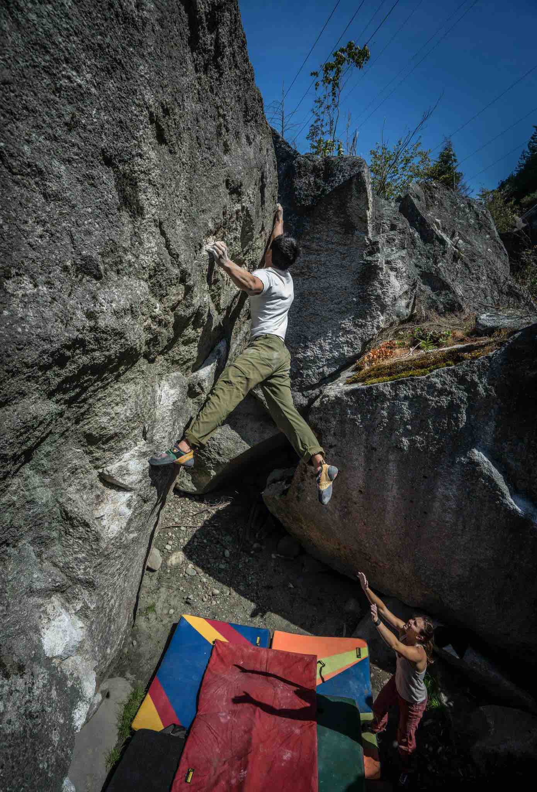
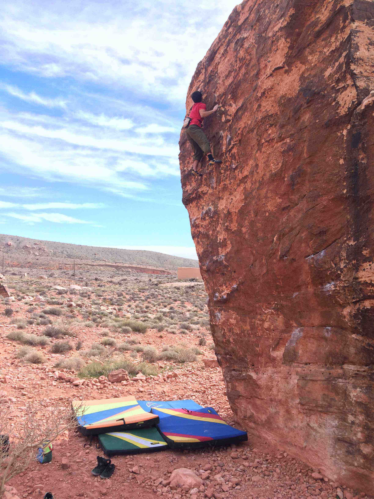
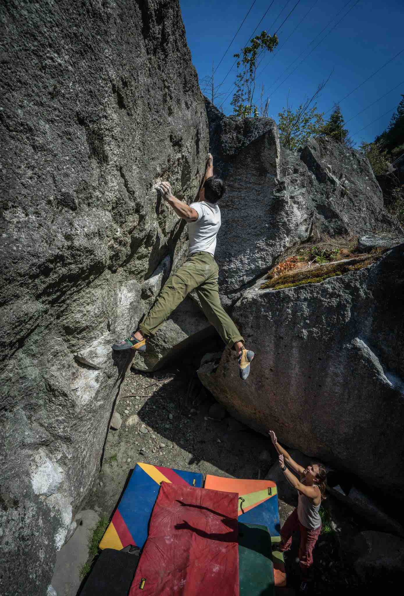
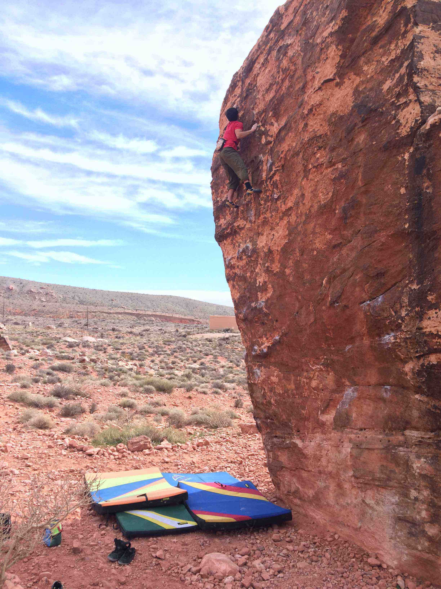

Rock Climbing
I have been rock climbing since 2008 and enjoy climbing in a variety of areas both domestically and internationally. 




Simulation Baseball
Since 2009 I have participated in a hyper-realistic, 30 team, DMB simulation league (NSBL). This hobby was really my first foray into the applicable world of data and statistics. In running this team, I have used a data informed, systematic, process-oriented approach in management decisions that has generated very positive results. While I have developed some bad habits (I became well versed in MS Excel, and it is now too big of a crutch in my work), overall the league has been a great experience and has taught me various skills that I would not have gleaned elsewhere.Recreational Sports
I played a variety of intramural sports while in college, and continue to enjoy playing these sports recreationally.Ultimate Frisbee

Soccer

Ice Hockey
Cats
I love most animals, but I feel most strongly about cats. My cats are always fun to be around and do a great job cheering me up if I am in a bad mood.

Basketball
While in college I developed a new interest in basketball and enjoy both playing recreationally and working with basketball data.
Here I am demonstrating that neither my fellow interns nor I are capable of shooting at an NBA level.